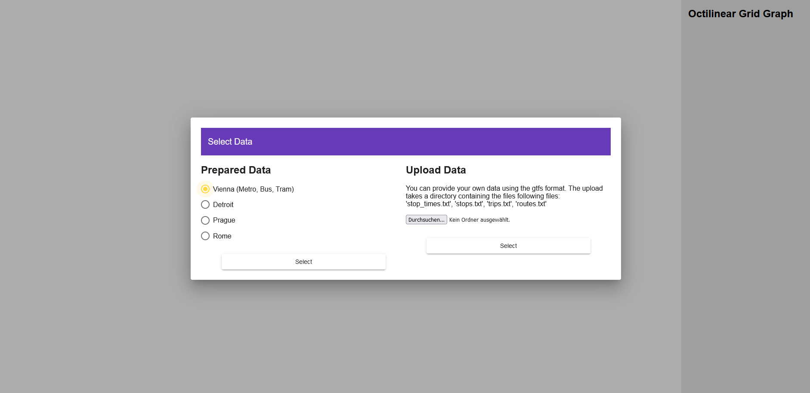
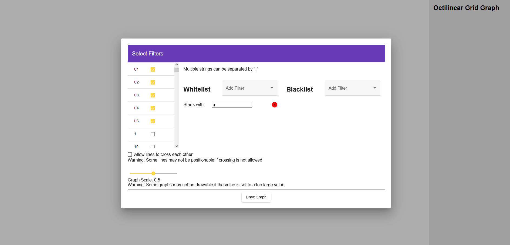

Metro Maps on Octilinear Grid Graphs
By Georg Schenzel 01633078 & Viktoria Pundy 01633403
The paper proposes an algorithm for drawing public transport maps on an octilinear grid graph.
Such a graph allows each edge to be drawn vertically, horizontally or diagonally. Stations are displayed
as nodes of the graph.
Our implementation of the algorithm takes data in GTFS-Format as input
and provides a resulting drawing of the contained lines as output.
We provide data of five cities for the graph, however, the users can upload their own files as well.
UI

In the first step a user can select one of the five prepared datasets (Vienna, Rome, Prague, Detroit and Stuttgart) or choose to upload a new dataset in the gtfs format.

The data can then be filtered by different blacklist and whitelist filters, allowing to create custom maps. Supported filters are: filtering by route type (i.e. subway, tram...), and different text matching filters using the line names. At the bottom, the user can choose if lines are allowed to cross each other in the graph and set the scale of the drawn graph.

When the lines have been chosen, the algorithm runs and afterwards the graph is drawn in the browser. On the right side of the window is a list of all lines with their default colours. The algorithm takes onlya few seconds for smaller datasets and can take more than a minute for larger ones. If no colour was specified in the data, the colour is set to black. With a click on the colour bar, the colour can be adjusted for each line individually. When hovering over the graph elements, the name of the lines and the stations are shown and the lines are highlighted.
Implementation Details
The algorithm was implemented with TypeScript and Angular. The drawing of the graph is done with the library d3.js. To achieve better performance we used web workers for processing gtfs data and runnig the actual algorithms. Webworkers run in a separate thread and won't block the UI.
The algorithm uses a special graph, where each node on a grid actually consists of 9 different nodes. This allows us to have a fine controll of edge costs when performing path finding between stations.
Links